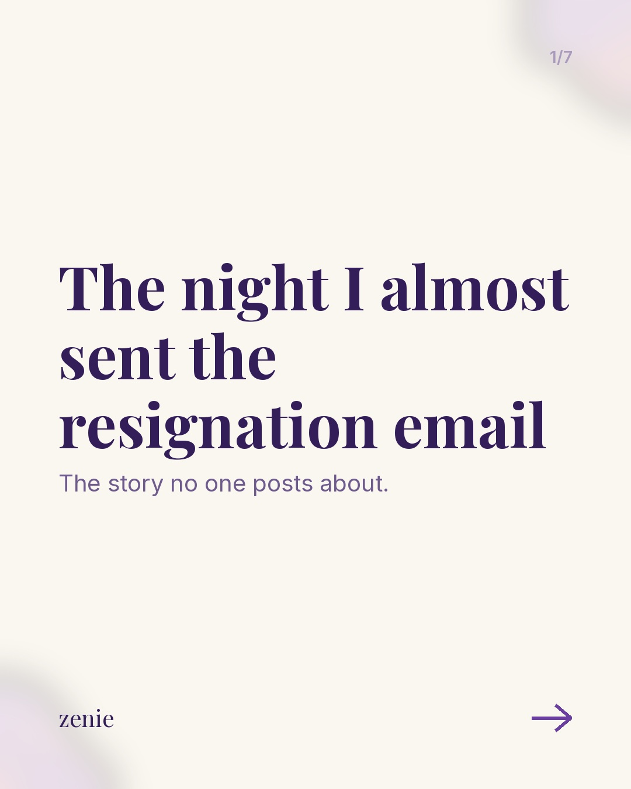
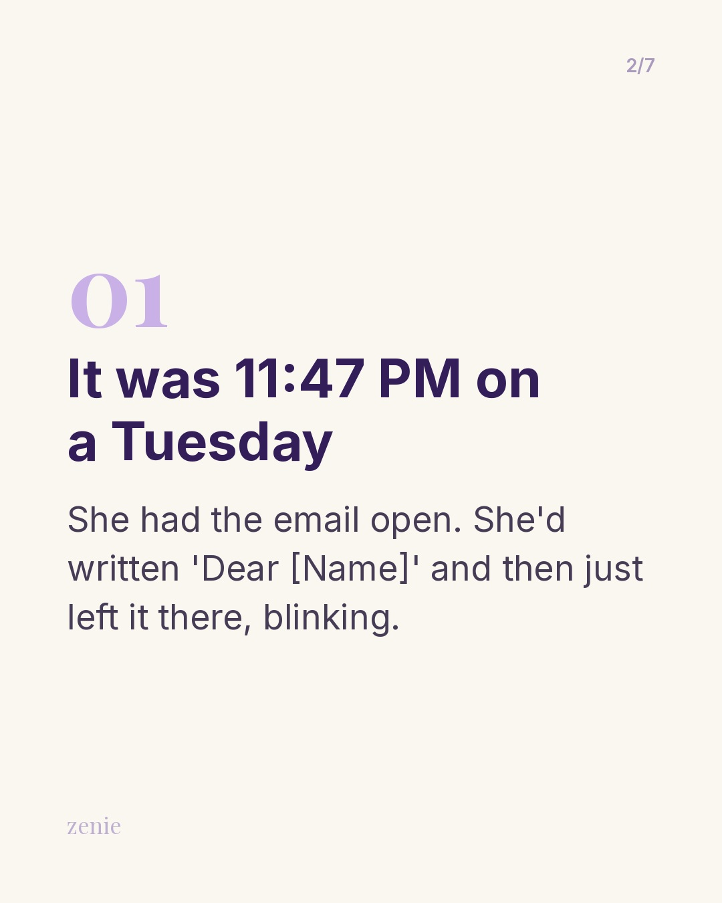
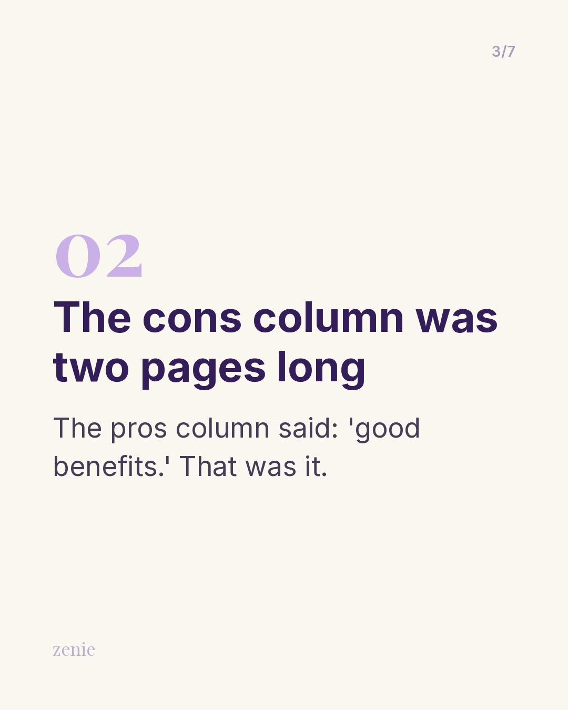
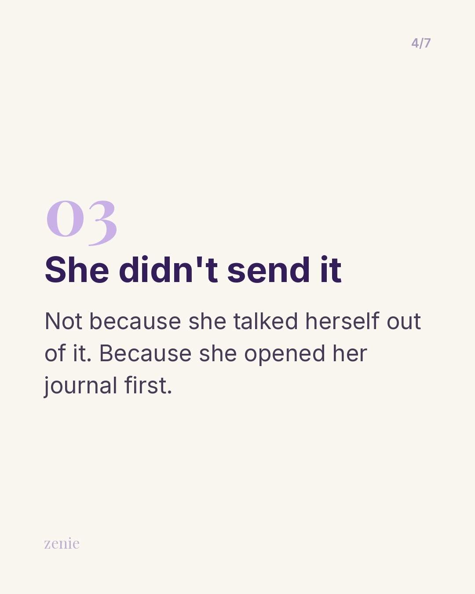
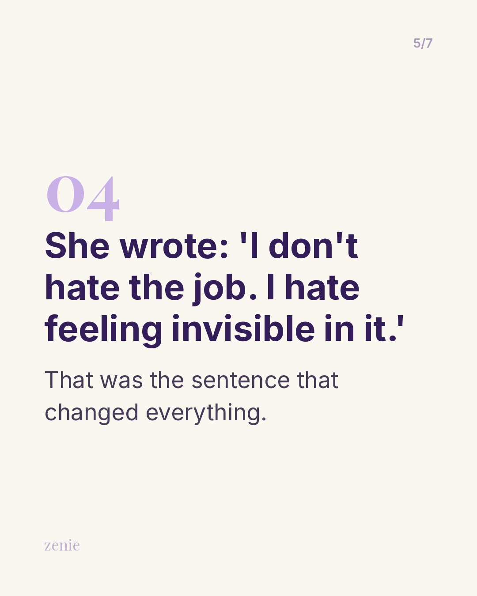
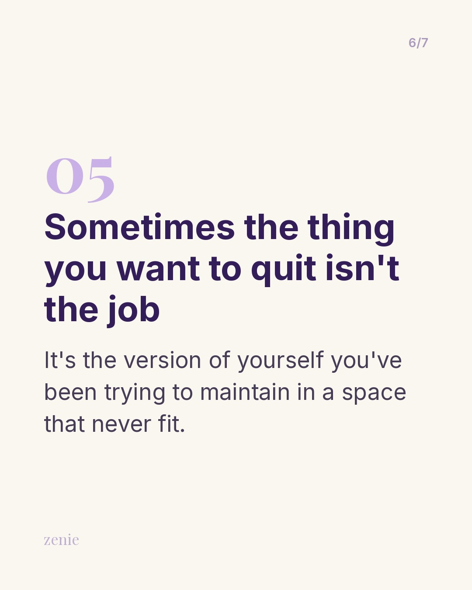
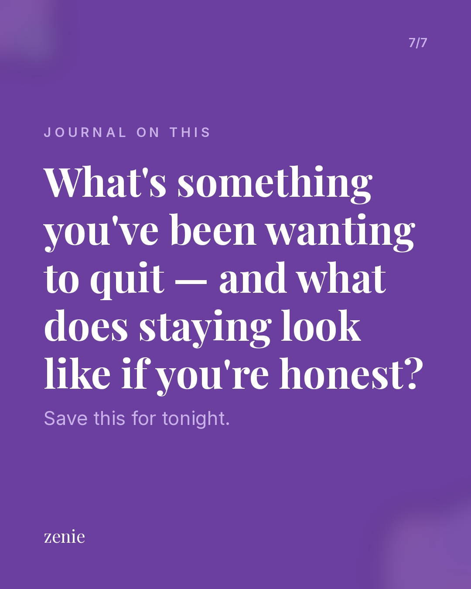
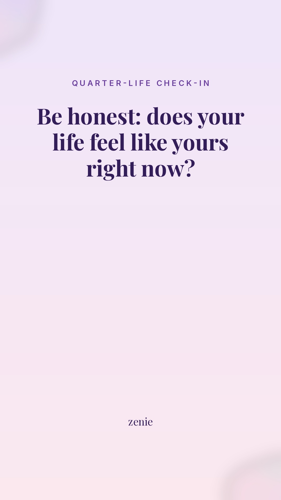
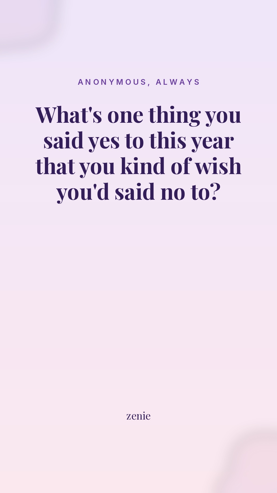
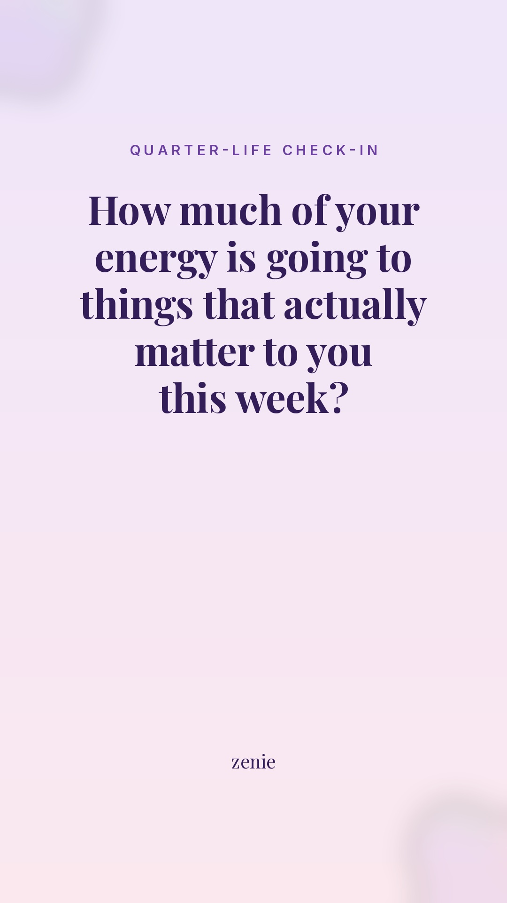

Meme 1 Meme
IG: The pout is proportional to how many times I've been asked this in the last two weeks.
What's one thing you haven't been able to plan your way out of this year?
#quarterlifecrisis #careeranxiety #journalingprompts #zenieapp #adultingishard
FB: Mid-November and someone asks what my plan is. The pout says everything. Here's tonight's prompt: what's one thing you haven't been able to plan your way out of this year? Drop your answer below — this one is worth writing down.
#quarterlifecrisis #careeranxiety #journalingprompts #zenieapp #adultingishard
Best time: Wednesday 6–8 PM PST
🎯 Pairing the dramatic_pout clip (literally depicts sulking at an unwanted question) with the 'so what's the plan?' November-math joke, because hyper-specific anti-planning humor earns sends from people tagging the friend who keeps asking them the same question; expect sends over saves.
Carousel 1 Carousel







Swipe sideways to see every slide.
IG: Career anxiety at 26 hits different at 11:47 PM with an unsent email.
What's something you've been wanting to quit — and what does staying honestly look like?
Save this for the friend who always has a tab open with her resignation typed.
#careeranxiety #quarterlifecrisis #journalingprompts #zenieapp #journalwithme
FB: Late night, laptop open, the email half-written. Sometimes the most important thing you'll write isn't the resignation — it's the journal entry that comes before it. What's something you've been wanting to quit — and what does staying honestly look like? Save this and share it with anyone in that moment tonight.
#careeranxiety #quarterlifecrisis #journalingprompts #zenieapp #journalwithme
Best time: Tuesday 6–8 PM PST
🎯 The unsent_story carousel tells a composite narrative that readers feel seen in but have never posted about; the 'resignation email almost sent' scenario is specific enough to be universal, and the arc from 'I hate the job' to 'I hate feeling invisible in it' is the kind of reframe people save and send — expect saves from people who've had this exact night.
Reel 1 ReelQuarter-Life Check-In
No sound is baked in: add a trending audio in the Instagram app when posting.
Footage: Pexels (free to use, no credit needed).
IG: Still here. Still doing the math.
What's one thing you wanted this year that you haven't let yourself fully admit out loud yet?
#quarterlifecrisis #journalingprompts #selfreflection #zenieapp #quarterlifecheck
FB: That question hits different every time. If you've been circling it too — here's tonight's prompt: what's one thing you wanted this year that you haven't let yourself fully admit out loud yet?
#quarterlifecrisis #journalingprompts #selfreflection #zenieapp #quarterlifecheck
Best time: Monday 7–9 PM PST
🎯 POV Reel framing the ongoing 'November math' moment — mid-month, the year almost over, the gap between January intentions and current reality fully visible — with a question most people are asking internally but not saying; expect shares to friends who'd immediately relate.
Text Card 1 Text Card
IG: The gap between the first text and the second one is exactly where journaling lives.
What would you say if someone asked how you were doing — and you let yourself answer honestly?
Send this to the friend you owe a real answer to.
#journalingprompts #selfreflection #emotionalhealth #zenieapp #sendthis
FB: There's a version of you that has been saying 'I'm fine, just tired' on autopilot for weeks. Here's what's worth writing down tonight: what would you say if someone asked how you were actually doing — and you let yourself answer honestly? Send this to the person who'd actually want to know.
#journalingprompts #selfreflection #emotionalhealth #zenieapp #sendthis
Best time: Thursday 6–8 PM PST
🎯 The text_thread depicting the 'I'm fine → wait no I'm not' pivot names the exact gap between the performed and the real answer; built to be sent because the person reading it immediately thinks of one friend — expect sends as the primary metric.
Text Card 2 Text CardSunday Scaries
IG: Sunday 7 PM has entered the chat.
Write it down — not 'work stuff,' the actual specific thing.
#SundayScaries #journalingprompts #sundaydread #zenieapp #weeklyreflection
FB: It's Sunday, and there's already something sitting in your chest about tomorrow. Naming the actual thing — not just 'work' but the specific meeting, the conversation, the inbox — usually makes it smaller. What's the part of Monday you're already dreading? Drop it below or write it down tonight.
#SundayScaries #journalingprompts #sundaydread #zenieapp #weeklyreflection
Best time: Sunday 6–8 PM PST
🎯 The fill-blank format for Sunday Scaries invites literal completion (readers want to fill it in), earning comments from followers naming the specific thing and sends to work friends who'd agree — testing whether named dread outperforms the vague 'Sunday Scaries' as a comment driver.
Repost 1 Repost
Watch the reel · credit @morganharpernichols
IG: For anyone who keeps putting off processing the season they're actually in.
What season in your life is asking for more of your attention than you've been giving it?
Credit: @morganharpernichols
#journalingprompts #selfreflection #poetrygram #zenieapp #seasonalreflection
FB: Morgan Harper Nichols captures something we don't always say out loud — that the seasons we move through emotionally don't always match the ones on the calendar. Here's tonight's prompt: what season in your life is asking for more of your attention than you've been giving it? Share this with someone who needs a moment to breathe today.
Credit: @morganharpernichols
#journalingprompts #selfreflection #poetrygram #zenieapp #seasonalreflection
Best time: Friday 5–7 PM PST
🎯 Repurposing Morgan Harper Nichols's seasonal/rain poetry content (highest eng in repost library at 2.7%) against a late-November reflection prompt; expect saves from people sitting with pre-holiday feelings and shares to friends who'd find it at the right moment.
Story 1 StoryQuarter-Life Check-In



Swipe sideways to see every frame.
Frame 1: add a poll sticker in the empty middle — options: Yes, mostly / Not really.
Frame 2: add a question sticker in the empty middle.
Frame 3: add a slider sticker in the empty middle.
Best time: Wednesday 2–4 PM PST
🎯 The quarter-life check-in story set uses a poll, question box, and slider to get existing followers talking about agency and choices — story answers feed future you_told_us carousels, so each reply is both engagement and content pipeline material.